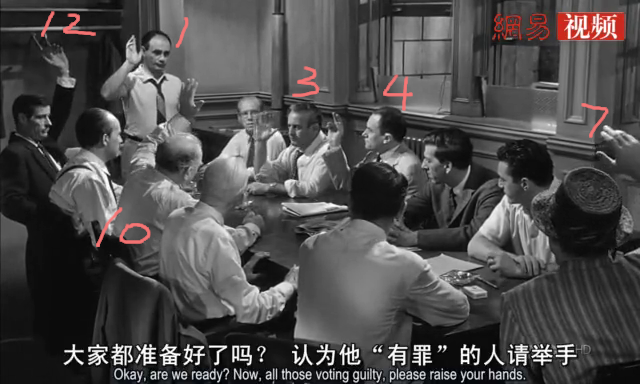
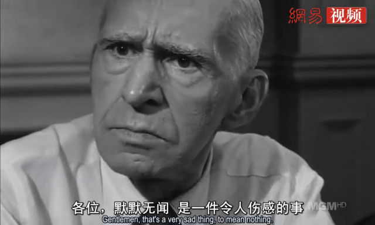
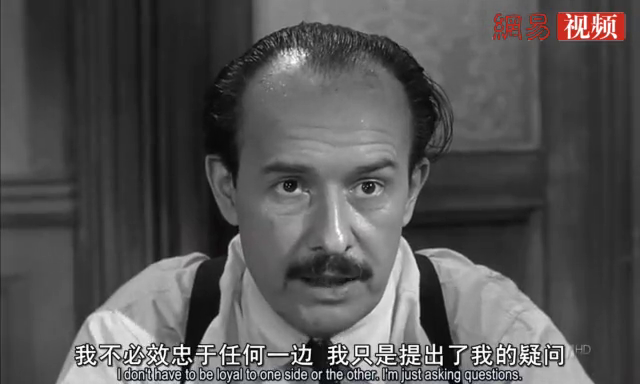
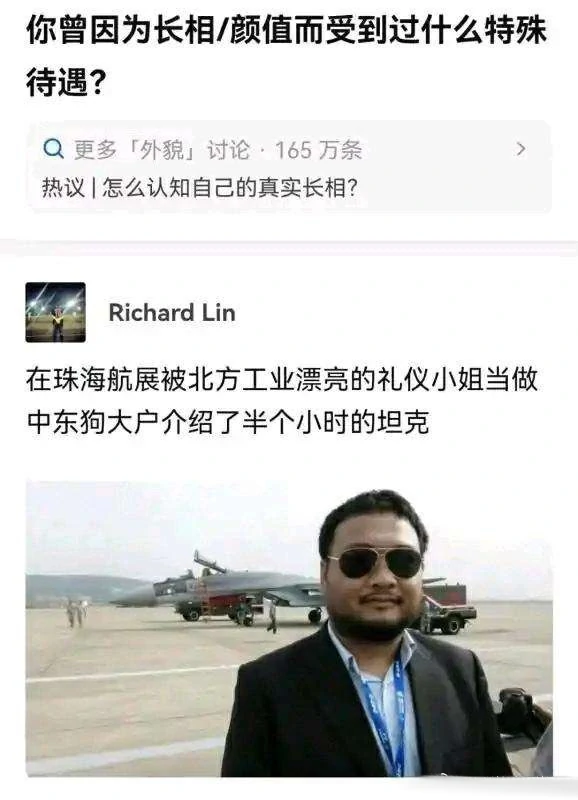

12 Angry men

基本信息
警告：
以下文字涉及剧情描述，不建议在观影前阅读。
我在想，这类片子应该是女性们最不爱看的影片了吧，既没有小鲜肉，也没有花美男，甚至连色彩都没有。影片拍摄的唯一的场地就是一间待满了中老年男人并充满汗臭的房间，外挂一个卫生间。放到现在连情景喜剧都不敢这么拍。这个房间里没有空调，连唯一的风扇也“坏了”。是的，你没有看错，五十年代就有空调了，在那个中国人民还在一穷二白埋头努力搞建设的年代，毕竟那里是美国嘛。这是一年中气温最高的一天，而且潮湿闷热，绅士们的穿着都很得体，西装革履、长袖衬衣，很多人还戴着帽子来的。假如不是剧情的刻意要求的话，我想那就只有一个原因——就是当时纽约夏季的最高气温远比现在要低很多。一个局部地区气候变化的例子在老电影中得以佐证，还真是凑巧啊。喜欢较真的同学可以去查询下历史天气数据，以安抚下我这颗喜欢胡思乱想的心。
大雨来临之前的压抑，会让人愈加烦躁，夏季高温更易上火，怕上火，就喝嘉多宝，实在不行，还有王老吉！当人与人之间的心火上升到临界点，情绪极容易失控，甚至做出一些丧失理智的事情来，这样的日子其实并不适合讨论案情，特别是一宗一级谋杀案。所有的证词都对被告不利，所有的证据似乎都足以让外界盖棺定论，从流程上只剩陪审团的十二个成员一致通过了。
但是，看起来像是铁证如山的案子还是被推翻了。
其实他并不孤单
看了许多影评，都强调主角1对11，一个打了十一个，比叶师傅还多打了一个。这无疑给主角塑造了一种孤胆英雄力挽狂澜的形象，在又重新看过影片N遍之后，我否定了这种看法。理由如下，请看如下一张截图。

这是首次举手投票的场景，如果留心观察，并不是很多人想像中的十一只手同时举起。最先举手的是我在图中标出序号的六个人。这表明只有这六个坚定认为被告有罪。后面五个人，是在看到前面六个人举手之后，才依次举起了手，而这一点恰好证明了这五个人潜意识中的犹豫不决，尽管有些人口里说被告有罪，但内心其实是不确定的。而最后举手的，恰恰正是坐在主角旁边的那个老头，是案情反转的开始。所以剧情早在第一次举手表决时就埋下了伏笔。
再来看看，最先举手的六个人中，其中七号和十二号两个人心不在焉，一个老是想着晚上八点的棒球赛（七号），总想着早点结束走人；另一个则在讨论案情的时候和人聊天开玩笑，讨论广告创意（十二号），心思似乎也没在案子上，所以这两票其实算得上是两张废票。换句话说，他们随时有可能随大流地倒向另一方。事实上，在随后的剧情中，十二号也出现了多次的倒戈，从有罪到无罪，又迫于有罪方的压力倒向有罪，最终因为良知选择了无罪。自始至终，他都没有自己的主见，而是被他人左右。这种群体往往是很可怕的，是典型的骑墙派，很容易被人带了节奏误作了帮凶。而七号则是极度利己主义，当有罪占大多数是他站队有罪，当无罪占上风时他则倒向无罪，能否提供正当的理由对于他来说并不重要，重要的是能尽快结案去看球。他的职业是销售（Sells）专长是计算利弊，对于判决的最终结果他毫不关心，永远只站在利益一边。这也是后来十号陪审员对他发飙的重要原因。
另外为了以示公正，他们被锁在这间房子里，直到所有的人一致通过，有罪或是无罪的判决（不排除有可能在此过夜）。两个人的心思都没在案子上，都是来打酱油的。所以你看，其实有罪派虽然人多，但并不完全是铁板一块，至少没有想像得那么牢固。当然，这是回过头来分析，当投票只是一次过时，当局者未必能看得这么清楚，投出反对的一票则需要莫大的勇气。
有了以上的基础，那么接下来的反转就顺理成章了。首先是第二次不记名投票时，九号老头子倒戈了，或许是源于其他人对他的不尊重。抓住机会他细细地剖析了那个证人老头的内心，但是这无法称之为证据，更像是一种直觉。从他娓娓道来的话语来看，他真的是在分析那个老头吗？或许他是在说自己，同样是渴望被人关注被重视的一位普通老人。也正是这位老者，在辩论最后的阶段驳倒了有罪一方了关键性的证词——那位亲眼目睹案发的中年妇女，在案发时有可能她连眼镜都没戴。让最终的局面变成十一比一，无罪一方形成压倒性优势。

案情从此被撕开一个口子，陪审员们利用各自的专长，你一言我一语，让真相开始一点一点水落石出。例如我们的主人公建筑师戴维斯先生，便利用自己的专业知识判断楼下隔着天花板是无法听清楼上的对话的。那个从小生活在贫民窟被某些陪审团成员岐视的五号陪审员，是第二个倒向无罪派的，因为他受够了有罪一方某些人，明显带有偏见的推定，这让他相当恼火，在这之前尽量忍让克制的他最终选择倒戈无罪一方。
三号陪审员是传呼公司的老板，是最为坚定的有罪派，直到影片最后才被说服，也是最后一个才投票无罪的人。他的坚定与顽固并不是凭空产生的，有着自身的家庭背景。从影片开头就一直断断续续在交代，他也有个和被告年纪相仿的儿子，但是他们之间的父子关系很紧张。简单粗暴的家长式作风让这个青春期年纪的叛逆男孩非常反感，他的儿子最终选择与这位封建大家长决裂。或许是忍耐到了极限，在十六岁时父子俩打过一架后，儿子便独自离家出走，这一走就杳无音信。从此，老板就在心里种下了对儿子的仇恨（又或许还夹杂了一些思念），而这种仇恨，又因为这一桩杀父案让其投射到被告身上。
在大雨来到之前，众人躁动的情绪逐渐达到高潮，三号试图动手干掉八号，被众人出手阻拦，而他抛出论调令当场的其他所有人都相当反感。一阵沉默之后，大雨倾盆而下，大雨落下之后，一切都将改变。因为雨天室内光线昏暗，有人打开了电灯，此时室内依然还是很热，又有人试图去开了开那个“坏掉”的风扇，这次居然可以打开了。啊，原来风扇并没有坏，只不过风扇电源开关和灯连在了一起而已，一切都在向好的方向发展。这个细节似乎在暗示，我们所看到的很多事情，也许只是一层表象，不到触发了某些特殊条件，真相不会随意浮出水面。也有点像是我们中国人常说的那个：“不是不报，时候未到。”
理性、中立、客观
近些年来，人们对于理中客这类人群恐怕有着诸多误解，甚至污名化。我看到还有些短视频还专门吐槽这类人，其实在看过这类视频之后，我发现他们对于理中客的认知还停留在杠精上。最大的糟点在于这类人不站队，永远站在第三方发表意见。其实这是不对的，真正的理中客，不是永远都中立不站队，而是不着急不盲目地站队，反而在仔细弄清楚真相或在排除自己的偏见之后，坚定地选择自己的队列。让自己能够短暂地保持中立，其实就是更好地保护理性和客观，中立只是手段而并非目的。不过这类人在初期时往往正反两边都不讨好，毕竟他们没有从一开始就选择站队。落实到剧中的十一号陪审员——那个钟表匠就是最好的代表之一，还有对方的四号，以及从最开始就不投有罪票的八号，其实他也不确定被告是否真的无罪，而只是觉得案子确实有疑点而不宜轻率地做出极刑的裁决。这难道不是一种对生命负责的态度吗？

事实上，每个人眼里看到的真相，并不相同。不仅有主观性，还有片面性。
问题在于，片面的真相，哪怕是对的，都可能有毒。
好比NaCl，氯化钠，也就是我们每天吃的盐，是无毒的。但是一旦分解开来，变成了Na（钠）和CI（氯），分开来吃，无论单吃哪一样，都是会死人的。真相也是如此。片面的真相，可能会害死人。
在社会充斥着歧视和偏见的今天，使得理性、中立与客观的态度变得稀缺而显得犹为珍贵。不光是对女性，连男性也也无法置身事外。不然你以为35岁就被贴上竞争力不足标签的人群是谁？社会达尔文主义的思潮泛滥，让这个世界变得光怪陆离，使得我们在许多领域寸步难行。光讲理论太空洞，下面我们就来举例加以说明好了。
头一个例子：对于社会上曾流传甚广，可能至今都在被许多父母践行的育儿理念：“男孩穷养，女孩富养”。你会觉得这样的观念可行吗？曾经被冠以“严肃情色作家”的标签，妇女之友的冯唐老师在自己的新书中发表了独到见解。
是的，我对女性的态度就是友爱、热爱、宠爱，但希望她是独立 的、可爱的，即便身陷囹圄也能向阳而生的。所以，我不会无条件宠 溺，而时下一再被宣扬的“女孩要贵养”的歪风邪气，让我深恶痛绝。 理由很简单:
第一，社会阶级分层，壁垒已经固化，碍于传统理念和生理构造， 女性已经处于弱势，再像养宠物一样娇惯，失去竞争能力，还如何在社 会上立足？
第二，长期被物化、伸手钱来的女性，受到金钱诱惑的可能性更 大。
第三，不得不说，也不想为广大男同胞们狡辩，实名劝一句广大女 性朋友，2020年了，醒醒吧，哪个男人不渣？除了自强不息靠自己，你 还能靠谁？
“女孩要贵养”，我认为纯属胡扯。既然要男女平等，女性就要承担同样的社会责任和义务，要像男性一样成事。当然，相夫教子、齐身治家也是成事的一种。
除了第三条有些偏激以外，其他两条我认为没什么毛病，当然有可能会被一些人认为政治不正确。社会有岐视就是有岐视，它不会因为男女平等的高尚理念就轻易做出改变和让步，也不会因为某种广泛宣传就突然消失。可能很多人没有意识到，这是集体意识共同作用（恶）的结果，哪怕你只是妥协默认了这种不合理的存在。这不是某个个体就能产生的影响，身处其中的人都在直接或间接地受到影响，直到这种集体意识发生转变。或许有的家庭上一代人是既得利益者，但这并不影响这种巨大能量波及到下一代人，除非你家大业大，可以让儿女进了社会不打一天工，直接当老板。否则，TA始终将成为这种集体意识的受害者。看不懂？看不懂没关系，其核心思想简单归纳为一句二人转的唱词就是：
社会很单纯，复杂的是人！
姐就是女王，自信放光芒
我们需要被迫地去接受一些不公，与潜规则，在明明知道那是不对的情况下。
另一个例子是关于新冠病毒的。2020年是谣言层出不穷的一年，因为人类内心对于新冠病毒的恐惧堪比高端恐怖片。所以去年的上半年关于新冠的谣言就源源不断，其中有一条我记得特别清楚。这是一张图片（在网络上已经找不到了），图片做得很精致，上面列出了各种防护设备以及口罩能防护的颗粒物大小级别，N95口罩是防护级别最高的（再往上就是专业防护用具了），医用口罩次之，最后出现的则是新冠病毒的大小。然而图中标出的新冠病毒大小比N95防护颗粒还小，言外之意就是你就算戴了N95口罩也没什么用，病毒太小能钻进去。不知道去年在朋友圈传播这个图片的朋友和制作出这张图片的人现在作何感想呢？这种谣言得以传播其实证明了官方公信力的缺失与大众医学常识的匮乏，当然也不排除出于某种目的恶意传播。好在时间是个好人，总是抽丝剥茧地让我们看清楚真相。
众所周知，国内普通医用防护口罩从大量生产到上市是去年三四月份以后的事情，少量的N95口罩也是优先供应给医护人员的。在此之前，医药市场上的口罩是稀缺品。这就意味着，量产初期我们在市场上能够买到的大部分都是普通医用口罩甚至是防护级别更低的。如果按照谣言里所描述的，大家戴这种普通口罩根本起不到应有防护作用。可现实是什么呢？就靠着这样“落后”的装备，在保持一定社交距离的措施下，我们居然成功控制了疫情，甚至做到了复工复产。而且是在还有很多群体（中老年为主）防护意识很差劲的情况下，这种被打脸的谣言其实就不攻自破了。如果戴普通口罩真的防护无效的话，我们的医疗系统早就该崩溃了吧。当然也有坚信不疑的朋友早已为自己和家人配备了防毒面罩，小心使得万年船。小心点肯定是没错的，只不过总有种拿高射炮去打蚊子的感觉，一是给日常生活带来不便，二是增加了不必要的支出。
最后还是提下民主吧，这好像是美式价值观中绕不开的东西。如果到今天（2021年）为止，还有人在对你灌输或鼓吹美式民主的种种好处，那么你大可将其与卖大力丸的江湖郎中划上等号了。为什么？你见过这世上有一种药能包治百病的嘛，要有的话，那个人那个家族早就因此而发达了。中药都不敢这么吹，西药肯定不可能（一种药治一种病），那他不是江湖骗子又是什么？美式民主同样不是万能药，无论什么样的民族和文化背景一服下去就都能通体舒泰，祛病消灾。君不见战火纷飞的中东地区和一些非洲国家，至少对他们来说，这剂民主药是有副作用的。就连中山先生已经在这事上栽过一次跟头了，归根结底因当时的大众民智不足（大部分人是文盲，没条件受教育）。旧军阀们也只在意一己私利，而共和恰好倡导的是天下为公的伟大理念，这就导致刚从封建时代走出的中国民众撑不起这共和民主的漂亮外衣。哪怕就是当下的美国，号称全球高等教育普及率第一的国家，在疫情中的表现也令人大跌眼镜呢，看来这智慧的确是人世间的稀缺品，尤其是群体智慧。其实在这方面已经有人总结得很到位了，我就不在此班门弄斧了。
“一个国家将盛于国家所有权利益的本质民主，衰于迎合大多数人好恶的形式民主。美国式的民主曾经是革命的，现在已经不革命了，甚至需要革命了，美国人民和欧洲人民如果还抱着美国式的民主不放，将来的结果很可能跟苏联一样，是自身垮掉了，用不着谁去打倒。意志不一定非得体现利益，人类社会走到这个共识还需要时间，谁先意识到，谁就占优势。
说到专制，不管什么事、什么条件，不问青红皂白，唯数人头论，也是一种专制，是对实事求是的专制，是对科学决策的专制，本质上还是对国家和人民根本利益的专制，而违背科学的，违背事物规律的，就没有不付代价的。”
最后一个例子来自近期的珠海航空展，博君一笑，下期再见。

扩展阅读